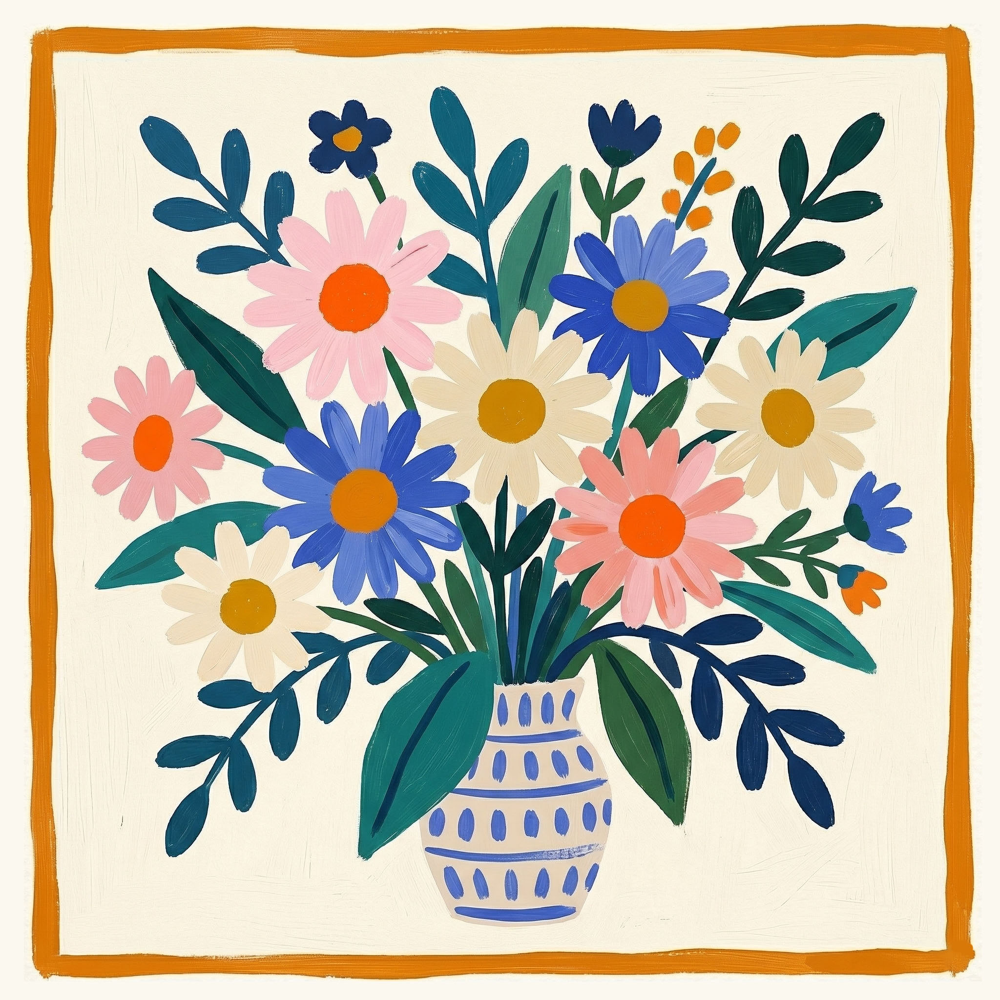

Querida Margarida,
Um feliz aniversário para a flor do jardim,
margarida mais linda e alegre que jasmin.
Bonita e sorridente por fora,
forte e resistente por dentro.
Ela vai preservando e vivendo,
dia após dia, mesmo contra o vento.
Mãe dedicada, exemplo de amor,
a que faz do seu lar um lugar de valor.
Hoje é teu aniversário, quero te ver sorrir;
sei que dias melhores estão por vir.
Com muito amor,
filho da margarida
mais bonita do Jardim.